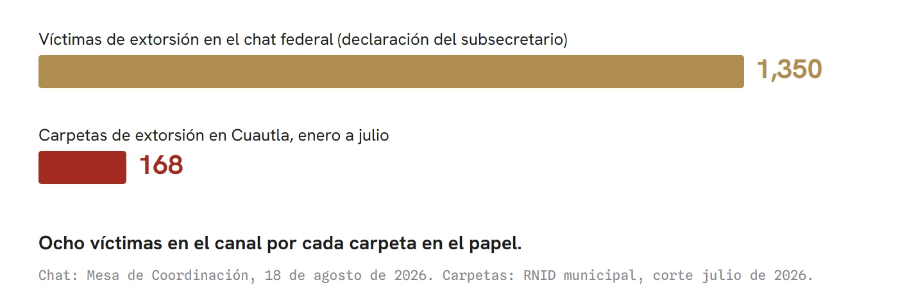
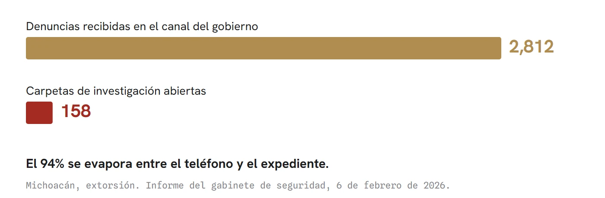
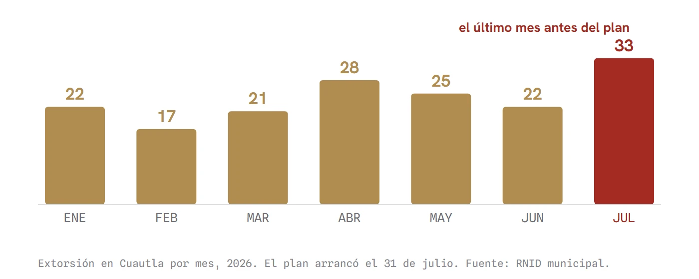

Las tres profecías
Antes de que exista el primer informe del Plan Cuautla, esta columna deja escritos los tres trucos de medición que los operativos federales de Sinaloa y Michoacán ya mostraron: comparar contra el peor mes, re-etiquetar dinero viejo y contar el delito en el canal propio en vez de la carpeta. Cotejo público con el corte de agosto del SESNSP, alrededor del 20 de septiembre.
En Cuautla la extorsión llega en un papelito: la hoja que aparece por debajo de la puerta del negocio. Lo reconoce el propio gobierno, cuya publicidad invita a denunciar "si recibes alguna llamada, mensaje, cartulina o papelito".
La respuesta del gobierno es otro papelito. Circula con el sello del Gobierno de México y los logotipos de siete corporaciones, se llama Caja de herramientas contra la extorsión, y su herramienta 4 explica el camino: escribir a la Red de Protección, un chat de WhatsApp que "canaliza tus denuncias a la autoridad correspondiente", o llamar al 089. La Fiscalía, que es la única puerta donde una denuncia se convierte en carpeta de investigación, no aparece en la publicidad.
El detalle parece menor. No lo es, y va la razón. La carpeta es la unidad con la que el propio gobierno mide sus resultados: cuando presume que un delito baja, presume carpetas. Un mensaje de WhatsApp no abre carpeta. Una llamada al 089 tampoco: es una línea de denuncia anónima por diseño. Lo que entra por esos canales puede terminar en la estadística o puede no llegar nunca, y ese tramo no lo publica nadie.
El Plan Cuautla opera desde el 31 de julio: 396 elementos de Marina, Ejército, Guardia Nacional y las policías, repartidos en 14 colonias. No estaba presupuestado en ningún plan nacional; lo parió la emergencia. La extorsión de Morelos pasó de 221 a 469 carpetas entre enero y julio, y Cuautla concentra 11.9 denuncias por cada mil negocios, ocho veces la tasa de Cuernavaca.
La aritmética del chat ya existía antes del flyer. El subsecretario federal enviado a Morelos declaró en agosto que su canal contra la extorsión reúne a unas 1,350 personas, entre comerciantes y empresarios que la han sufrido. En los mismos siete meses, Cuautla entero produjo 168 carpetas por ese delito. Ocho víctimas dentro del canal por cada carpeta que existe en el papel.

Esto que parece un descuido administrativo tiene nombre y apellido desde hace medio siglo. Donald T. Campbell lo escribió en 1976: cuanto más se usa un indicador para tomar decisiones y repartir aplausos, más presión soporta para corromperse, y más distorsiona el proceso que debía medir. La ley de Campbell no acusa a nadie: describe un incentivo.
La ciencia tiene otra imagen para lo que sigue: el aleteo de una mariposa en Brasil que termina en tornado en Texas, la conferencia con la que Edward Lorenz explicó en 1972 que las causas chicas viajan lejos. Esta mariposa lleva dos años aleteando lejos de Cuautla, y los operativos de allá ya enseñan el final de la película que aquí apenas comienza. Conviene seguirle el rastro.
Primer aleteo: Sinaloa, 2024. Ahí ni siquiera hubo plan: hubo tropa. El nombre "Plan Sinaloa" pertenece a un paquete económico del gobierno estatal; lo federal fue un refuerzo iniciado en octubre de 2024 que llegó a 15,000 elementos, uno de cada cuatro militares desplegados en el país. El podio presume una baja de 44% midiendo desde octubre de 2024, que es el segundo mes más sangriento de los 23 que lleva la guerra interna del cártel. Contra su vida normal, la de antes de la guerra, Sinaloa sigue 134% arriba, y en 2026 mejora menos que el promedio nacional: 19.3 contra 23.6.
Segundo aleteo: Michoacán, 2025. El plan llegó el 9 de noviembre, ocho días después del asesinato del alcalde Carlos Manzo, por el que hay 31 detenidos y un señalado autor intelectual vinculado a proceso. Le montaron 12,564 elementos y "más de 57 mil millones de pesos" encima del cajón. El 3 de julio, el gabinete presumió una reducción de 46% en homicidio comparando enero de 2025 contra junio de 2026. Enero de 2025 fue el mes más violento de todo 2025. Contra el promedio de los 12 meses previos al plan, la baja es de 37%, y el país entero bajó 25.5% en la misma ventana sin plan de por medio.
Mientras tanto, el delito que mató a Manzo subió en las cifras del propio Secretariado: las carpetas de extorsión michoacanas pasaron de 23.5 a 32.4 mensuales con el plan en marcha, 38% más. El gobierno reportó lo contrario, una baja de 13.8%, medida en su propio canal de reportes, igualito que el de aquí: 2,812 denuncias recibidas que se volvieron 158 carpetas. El 94% se evaporó entre el teléfono y el expediente. La fiscalía michoacana, por su parte, calcula que el cobro de piso al aguacate deja 10,800 millones de pesos al año. Hoy, con el plan encima.
Ocho víctimas en el teléfono por cada carpeta en el papel.

Puestos uno junto al otro, los aleteos comparten tres mañas. La base conveniente: medir desde el peor mes. El dinero re-etiquetado: los rubros del plan michoacano suman 76,780 millones, más que el total anunciado de 57 mil, porque adentro van becas y programas que ya existían. Y la categoría elástica: los "laboratorios" desmantelados en Sinaloa pasaron de 113 a 2,183 cuando la cuenta les sumó "áreas de concentración".
El tercer aleteo es el nuestro: el efecto mariposa ya se está viendo en Cuautla. Con dos precedentes tan uniformes, lo que sigue se puede escribir por adelantado. Tres pronósticos, con su fecha de cotejo.
Uno. El primer informe del Plan Cuautla se medirá contra julio. Julio cerró con 33 carpetas de extorsión, el mes más alto del año y el último antes del despliegue. Comparado contra julio, casi cualquier agosto parecerá milagro. Sería la tercera vez del mismo truco.

Dos. Presumirán el homicidio. En Cuautla ya bajaba solo: de 65 a 46 carpetas entre enero y julio, antes de que llegara el primer elemento del plan.
Tres. La extorsión se informará por el canal y no por la carpeta: denuncias atendidas en la Red, reportes al 089, mesas instaladas. Michoacán ya enseñó esa tubería y lo que se pierde adentro: 94 de cada 100 denuncias.
No afirmo que los chats se hayan diseñado para inhibir la denuncia formal. Hay una lectura que juega contra esa sospecha y la escribo con el mismo tamaño de letra: la cifra negra de la extorsión era de 97% antes de que existiera chat alguno, así que la Red podría estar captando víctimas que jamás habrían pisado la Fiscalía. Las dos hipótesis se separan con un solo dato: si las carpetas de Cuautla caen mientras el canal crece, la métrica está siendo administrada; si suben con el canal activo, la denuncia está siendo empujada, y esta casa lo publicará con la misma tinta.
También esto pertenece al hilo contrario: en Michoacán la baja del homicidio fue real y mayor que la marea nacional, unos 14.5 puntos de mérito propio. Y 396 elementos en 14 colonias pueden bajar el cobro de verdad. Ojalá.
El cotejo tiene fecha. Alrededor del 20 de septiembre, fecha habitual de publicación, el Secretariado libera el corte de agosto, el primer mes completo del plan, y la Mesa estatal presentará su informe. Ahí se sabrá si los tres pronósticos se cumplieron. Que falle alguno sería una buena noticia, y quedará registrado aquí igual.
Piénselo con la cabeza fría, lector: si la denuncia solo entra al chat, bajarán las carpetas, no el delito. La víctima queda archivada en un teléfono. Queda también la pregunta que el flyer no responde y que Campbell dejó armada hace 50 años: entre el chat y la carpeta hay un tramo que nadie audita ni publica. Cuando un indicador se vuelve trofeo, deja de medir. ¿Quién cuenta lo que pasa en ese tramo? Mientras nadie responda, que no lo archiven a usted: la denuncia ante la Fiscalía es la única que no se puede evaporar sin dejar rastro.
La pieza hermana: Ya no es solo Cuautla, la expansión de la extorsión en Morelos Ver el expediente →
- Donald T. Campbell, "Assessing the Impact of Planned Social Change", Evaluation and Program Planning, vol. 2, 1979 (texto de 1976, Dartmouth College). doi.org/10.1016/0149-7189%2879%2990048-X
- Edward N. Lorenz, "Does the Flap of a Butterfly's Wings in Brazil Set Off a Tornado in Texas?", ponencia ante la AAAS, 29 de diciembre de 1972. mathsciencehistory.com/wp-content/uploads/2020/03/132_kap6_lorenz_artikel_the_butterfly_effect.pdf
- Presidencia de la República, "Presidenta presenta los 12 ejes del Plan Michoacán por la Paz y la Justicia", 9 de noviembre de 2025. gob.mx/presidencia/prensa/presidenta-presenta-los-12-ejes-del-plan-michoacan-por-la-paz-y-la-justicia-contempla-100-acciones-y-una-inversion-de-mas-de-57-mil-mdp
- SSPC, "Estrategia Nacional de Seguridad y Plan Michoacán reducen 46% el homicidio doloso en la entidad", 3 de julio de 2026. gob.mx/sspc/prensa/estrategia-nacional-de-seguridad-y-plan-michoacan-por-la-paz-y-la-justicia-reducen-46-el-homicidio-doloso-en-la-entidad
- N+, informe del gabinete de seguridad del 6 de febrero de 2026 (extorsión: 2,812 denuncias, 158 carpetas). nmas.com.mx/seguridad/asesinatos/homicidios-en-michoacan-bajan-30-seguridad-no-es-una-tarea-terminada-omar-garcia-harfuch
- Fábrica de Periodismo, "Extorsión al aguacate en Michoacán", 7 de agosto de 2026 (FGE estatal: 10,800 mdp anuales). fabricadeperiodismo.com/noticias/extorsion-michoacan-aguacate
- El Imparcial, "García Harfuch asegura que fuerzas federales no se retirarán de Sinaloa", 5 de mayo de 2026 (15,000 elementos, 48 aeronaves). elimparcial.com/mexico/2026/05/05/omar-garcia-harfuch-asegura-que-fuerzas-federales-no-se-retiraran-de-sinaloa
- La Crónica, "Cinco estados concentran mayor despliegue de fuerzas armadas; Sinaloa, foco de atención", 2 de julio de 2026 (Informe Semestral de la Fuerza Armada Permanente). cronica.com.mx/nacional/2026/07/02/cinco-estados-concentran-mayor-despliegue-de-fuerzas-armadas-sinaloa-foco-de-atencion
- UnoTV / El Universal, corte del gabinete de seguridad del 4 de mayo de 2026 en Culiacán (reducción de 44%, laboratorios y áreas de concentración). unotv.com/nacional/garcia-harfuch-detalla-plan-de-seguridad-para-sinaloa-marina-da-cifras-de-decomisos-y-detenciones
- Expansión Política, "Estrategia de seguridad de Sheinbaum para combatir violencia en Sinaloa", 9 de octubre de 2024. politica.expansion.mx/mexico/2024/10/09/estrategia-seguridad-sheinbaum-combatir-violencia-sinaloa
- Proceso, "Plan Cuautla: inicio de operaciones con 394 elementos", 31 de julio de 2026 (documentado en el ledger de Ya no es solo Cuautla, 45 Digital Noticias).
- SESNSP / RNID, incidencia delictiva del fuero común, bases estatal y municipal, series 2015-2025 (corte mayo 2026) y 2026 (corte julio 2026, cifras preliminares del RNID); cálculos propios de la casa sobre la base cruda. gob.mx/sesnsp/acciones-y-programas/datos-abiertos-de-incidencia-delictiva
- INEGI, ENVIPE (cifra negra específica de extorsión: 97.4% en 2022, 96.7% en 2023). inegi.org.mx/programas/envipe/2024
- 45 Digital Noticias, Ya no es solo Cuautla (extorsión Morelos 221 a 469; 11.9 denuncias por mil unidades económicas) y El truco (canal de 1,350 comerciantes). 45digitalnoticias.github.io/columnas/ya-no-es-solo-cuautla.html · 45digitalnoticias.github.io/columnas/el-truco.html
- Pieza gráfica oficial: "Caja de herramientas contra la extorsión, Herramienta 4", Gobierno de México / Gobernación / Seguridad / Defensa / Marina / GN / FGR + Gobierno de Morelos (flyer en poder de esta casa).
Las ligas van a la vista para que cualquiera compruebe por su cuenta. Si alguna dejó de resolver, escríbenos y la reponemos.
SRVO